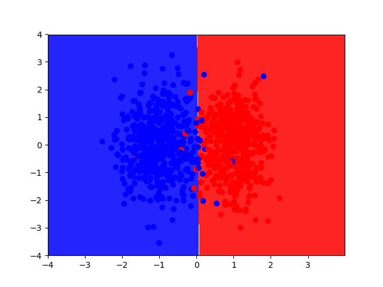
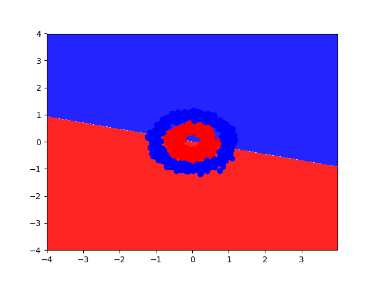
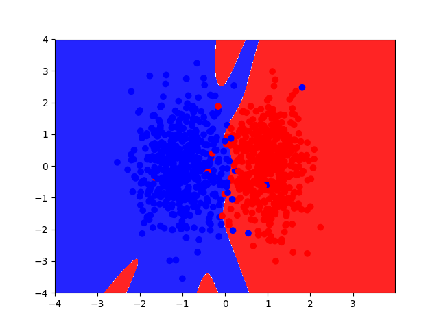
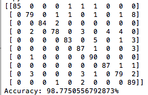

Problem Definition
The purpose of this assignment was to implement our own Python versions of logistic regression classifier and neural network classes that can make decisions about input datasets based upon training that our classes received. Specifically we wanted to train our classes so that they could successfully process images of numbers, a direct application of our Python classes.
Learning about the inner workings of these classes is important because, if implemented correctly and properly trained, both a logistic regression classifer and a neural network can be very powerful tools to efficiently process data for many different applications.
Difficulties Faced:
- Trying to gain an understanding of logistic regression and neural networks on a fundamental level.
- Translating the high-level visual representation of the problem on paper into actual code.
- Understanding the interaction of all the different components of logistic regression and neural networks.
- Understanding the metrics to classify the accuracy of our systems
Method and Implementation
Our group mostly referred to the notes provided in our lab section and psuedo code provided on piazza. When implementing logistic regression we played around with a learning rate and passed in input and output dimmensions as parameters. We implemented a cost computation function, and a "fit" function that analyzes inputs to identify patterns so that inputs can be classified based on a "training input."
The logic for implementing our neural network was mostly similar to that of our logistic regression classifier, but we did have to account for additional fields and parameters to represent the "hidden layer" of weights and biases:
- Perform forward propagation to calculate our predictions
- Perform backward propagation to calculate gradients
- Update the parameters and evaluate
- Repeat the above steps to reach a point of convergence
Functions in logistic regression classifier:
- init: Initializes the parameters of the logistic regression classifer to random values. Takes in the number of dimensions of the input data, and the number of classes in the output data.
- compute_cost: Computes the average cost of the data set. Takes in the data array and labels corresponding to input data.
- predict: Makes a prediction based on current model parameters. Takes in the data array.
- fit: Learns model parameters to fit the data. Takes in the data array and labels corresponding to input data.
Functions in neural network are generally the same as those in the logistic regression classifier with slight modifications to account for a hidden layer.
Experiments
Experiment 1
Switching between linear and non linear data for the Logistic Regression Classifier.Result for linear dataset:

Result for non-linear dataset:

Experiment 2
Change the number of nodes in the hidden layer for the Neural Network class.Result of having 2 nodes:

Result of having 10 nodes:

Experiment 3
Trying linear and nonlinear datasets for the neutral network using 10 nodes. The results for using a linear dataset are the same as the previous image.Results using nonlinear data with a 10-node hidden layer:

Additional Experiments
Training the Logistic Regression classifier to recognize digits, the confusion matrix and accuracy below:
Results using a 10-node hidden layer neural network:

In both cases, the predict function was used on the X_test values (given) to get the predicted y values. Then, the predicted y values were compared to the actual y_test values to calculate an accuracy value
Results
Question 2: Can your logistic regression classifier learn non-linear decision boundaries? Why or why not?
No. The output is determined by a linear function: output = x_input * weights + bias.
Question 3: Can your neural network model (with one hidden layer) learn non-linear decision boundaries? Why or why not?
Yes. The output is determined by a nonlinear activation function, the sigmoid function. So our neural network is not limited to linear data.
Question 4: What effect does learning rate have on how your neural network is trained? Illustrate your answer by training your model using different learning rates. Provide plots illustrating the total cost of your model over time for different settings of the learning rate.
If the learning rate is too high it will cause the accuracy of the neural network to decline, shown below:

Question 5: What effect does the number of nodes in the hidden layer have on how your neural network is trained? Illustrate your answer by training your model using different numbers of hidden layer nodes. Provide plots showing the decision boundaries learned by your model for different settings of the number of nodes in the hidden layer.
As we add more nodes to the hidden layer, the neural network becomes more accurate. This is shown in the image below:
Discussion
We are fairly satisfied with the accuracy of our neural network, which can be shown below in the case of recognizing digits:
Conclusions
As stated above, we are satisfied with the accuracy of our neural network. Given training data, our neural network succeeds in being "trained" and is then able to use the patterns it detects from a training dataset to determine the class of a point in an input dataset.
Credits and Bibliography
Sources used:
- http://www.wildml.com/2015/09/implementing-a-neural-network-from-scratch/
- http://www.kdnuggets.com/2016/10/beginners-guide-neural-networks-python-scikit-learn.html